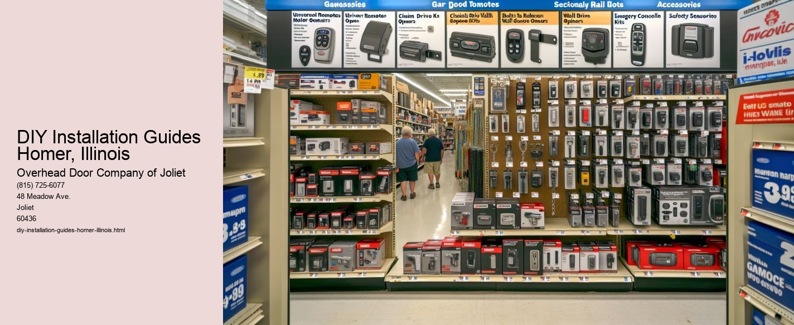

Serving Joliet, IL and surrounding Will County communities including:
Authorized Dealer for Overhead Door™ Openers and Accessories.

In the charming town of Homer, Illinois, nestled amidst the vast prairies and serene landscapes, theres a growing trend that reflects both the spirit of independence and the joy of craftsmanship-DIY installation guides. This movement is not just about saving money or time; its about cultivating a culture of self-reliance and creativity, empowering residents to take on projects that enhance their homes and lives.
DIY, or "do it yourself," has become a mantra for many in Homer, a town with a rich history and a community that values ingenuity and resourcefulness. The rise of DIY installation guides is a testament to the towns commitment to maintaining these values while embracing modern tools and techniques.
At its core, a DIY installation guide is more than a set of instructions; it is a gateway to learning and achievement. For the residents of Homer, these guides offer an opportunity to take control of their living spaces. Whether its installing a new kitchen backsplash, setting up a home theater system, or creating a backyard oasis, the availability of clear, step-by-step guides has made previously daunting tasks accessible to everyone.
One of the most significant advantages of DIY installation guides is their ability to demystify complex projects. In the past, undertaking home renovations or installations often required hiring professionals. While expert help is sometimes necessary, the availability of detailed guides has allowed many homeowners to gain confidence in their abilities. With a little patience and effort, residents can transform their homes and add personal touches that reflect their unique styles and preferences.
Moreover, these guides often incorporate sustainable practices, encouraging the use of eco-friendly materials and techniques. In Homer, where the community is increasingly aware of environmental impacts, DIY projects that promote sustainability resonate deeply. By choosing to install solar panels, create rainwater harvesting systems, or build composting units, residents contribute to a greener future while learning valuable skills.
The communal aspect of DIY projects cannot be overlooked.
Additionally, DIY installation projects can be a source of immense personal satisfaction and pride. Completing a project with ones own hands instills a sense of accomplishment that is hard to replicate.
In Homer, Illinois, the rise of DIY installation guides reflects a broader trend toward self-sufficiency and personal empowerment. These guides allow residents to take an active role in shaping their environments, promoting sustainability, and building community connections. As more people discover the joys and benefits of DIY projects, this movement is likely to continue growing, enriching the lives of both individuals and the community as a whole. The spirit of DIY in Homer is a testament to the enduring human desire to create, learn, and connect, making it a vital part of the towns cultural fabric.
Local Installation Companies Homer, Illinois